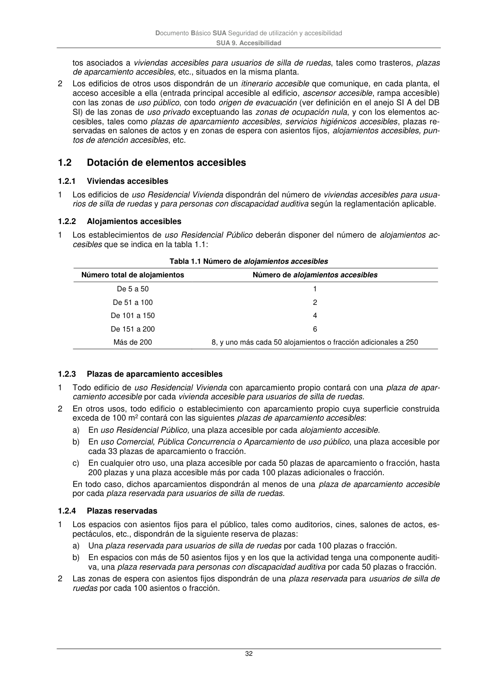

DB-SUA · 1.2 Dotación de elementos accesibles · 1.2.1 Viviendas accesibles · 1.2.2 Alojamientos accesibles · 1.2.3 Plazas de aparcamiento accesibles · 1.2.4 Plazas reservadas · versión 2022-06-14
SHA256: 3cfb5bbb135e8f02faebd8b844e03e8947994c18d4c9e675a7d2aa37d1cd5958 · página física 32 de 47 · métodos de encabezado
solo si están cotejados.
Formatos: Markdown · JSON de bloques · PDF p. 32 · imagen PNG
Documento Básico SUA Seguridad de utilización y accesibilidad SUA 9. Accesibilidad 32 tos asociados a viviendas accesibles para usuarios de silla de ruedas, tales como trasteros, plazas de aparcamiento accesibles, etc., situados en la misma planta. 2 Los edificios de otros usos dispondrán de un itinerario accesible que comunique, en cada planta, el acceso accesible a ella (entrada principal accesible al edificio, ascensor accesible, rampa accesible) con las zonas de uso público, con todo origen de evacuación (ver definición en el anejo SI A del DB SI) de las zonas de uso privado exceptuando las zonas de ocupación nula, y con los elementos ac- cesibles, tales como plazas de aparcamiento accesibles, servicios higiénicos accesibles, plazas re- servadas en salones de actos y en zonas de espera con asientos fijos, alojamientos accesibles, pun- tos de atención accesibles, etc. 1.2 Dotación de elementos accesibles 1.2.1 Viviendas accesibles 1 Los edificios de uso Residencial Vivienda dispondrán del número de viviendas accesibles para usua- rios de silla de ruedas y para personas con discapacidad auditiva según la reglamentación aplicable. 1.2.2 Alojamientos accesibles 1 Los establecimientos de uso Residencial Público deberán disponer del número de alojamientos ac- cesibles que se indica en la tabla 1.1: Tabla 1.1 Número de alojamientos accesibles Número total de alojamientos Número de alojamientos accesibles De 5 a 50 1 De 51 a 100 2 De 101 a 150 4 De 151 a 200 6 Más de 200 8, y uno más cada 50 alojamientos o fracción adicionales a 250 1.2.3 Plazas de aparcamiento accesibles 1 Todo edificio de uso Residencial Vivienda con aparcamiento propio contará con una plaza de apar- camiento accesible por cada vivienda accesible para usuarios de silla de ruedas. 2 En otros usos, todo edificio o establecimiento con aparcamiento propio cuya superficie construida exceda de 100 m2 contará con las siguientes plazas de aparcamiento accesibles: a) En uso Residencial Público, una plaza accesible por cada alojamiento accesible. b) En uso Comercial, Pública Concurrencia o Aparcamiento de uso público, una plaza accesible por cada 33 plazas de aparcamiento o fracción. c) En cualquier otro uso, una plaza accesible por cada 50 plazas de aparcamiento o fracción, hasta 200 plazas y una plaza accesible más por cada 100 plazas adicionales o fracción. En todo caso, dichos aparcamientos dispondrán al menos de una plaza de aparcamiento accesible por cada plaza reservada para usuarios de silla de ruedas. 1.2.4 Plazas reservadas 1 Los espacios con asientos fijos para el público, tales como auditorios, cines, salones de actos, es- pectáculos, etc., dispondrán de la siguiente reserva de plazas: a) Una plaza reservada para usuarios de silla de ruedas por cada 100 plazas o fracción. b) En espacios con más de 50 asientos fijos y en los que la actividad tenga una componente auditi- va, una plaza reservada para personas con discapacidad auditiva por cada 50 plazas o fracción. 2 Las zonas de espera con asientos fijos dispondrán de una plaza reservada para usuarios de silla de ruedas por cada 100 asientos o fracción.
